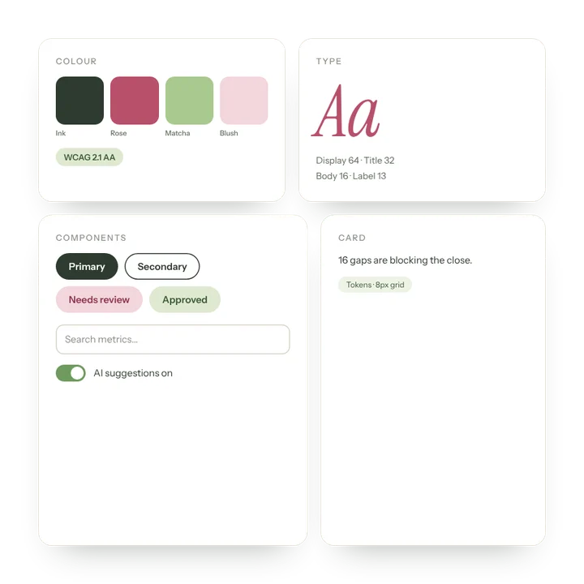

Each team styled its own buttons, tables and colours.
6D Technologies · DesignOps
Design system.
One tokenised system, so every product looks like one family and engineers build it right the first time.
- Role
- Built and scaled it
- Tools
- Figma, design tokens
- Covers
- Components, type, colour
- Standard
- WCAG 2.1 AA

01 · Problem
Same product, many looks.
Engineers rebuilt components from screenshots.
Accessibility was checked late, if at all.
02 · How I found it
I counted the differences.
- AuditScreen inventory?
Add how you found the drift, e.g. collected every button and table.
- AskEngineers
Add what engineers said about handoff.
- ReviewBuilt vs. designed
Compared shipped screens with the approved designs.
- DecideSystem before scale
Foundations first, then new features.
03 · Tokens
Name the decision, not the colour.
- Primitive. The raw palette and scale.
- Semantic. What a value is for: text, surface, accent.
- Component. What a part uses: button background, input border.
Change one semantic token and every product follows. Rebuilt here in my portfolio colours; swap in the real token names if you can share them.
surface#fffdf8canvas#f5f1e8text#2e3b2fmuted#5f6b58accent#b8506bsuccess#e4edda
04 · Components
Built once, used everywhere.
ButtonsPrimarySecondaryText link
InputsCampaign nameMonsoon data top-upHelper and error text, always below
Status chipsLiveNeeds reviewDraft
Type scaleDisplay 32Heading 22Body 16Caption 13
Data table rowPrepaid, falling recharge12,480Live
AccessibilityEvery pair checked
Text and surface tokens are paired so contrast passes WCAG 2.1 AA by default.
05 · Decisions
What I chose, and what it cost.
- System before scale.
Built the foundations before the next wave of features.Trade-off: a slower first month, faster every month after.
- Semantic tokens, not hex codes.
Designers and engineers talk about intent, so themes and changes are one edit.Trade-off: more names to learn at the start.
- Review built screens against the design.
I checked shipped screens with engineers, not just the Figma file.Trade-off: review time in every sprint.
06 · Outcome
One family of products.
00componentsAdd the real count
AAWCAG 2.1 contrastBuilt into the tokens
00products using itAdd the real count
07 · Reflection
What I’d do again, and not.
What didn’t work
- The first month was slower: new features waited for the foundations.
- Add what did not land, e.g. a component teams kept detaching.
What I’d do differently
- E.g. track adoption from day one, so the impact has numbers.
- Add your own.